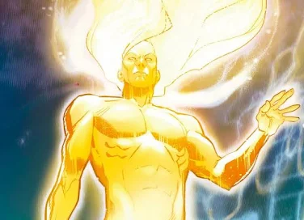
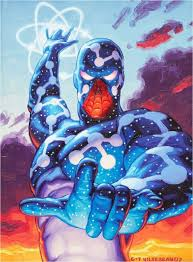

Marvel Le Gana a DC
Batalla entre seres omnipotentes
Si se compara al “dios supremo” de cada universo —The One Above All en Marvel y The Presence en DC— puede argumentarse que el de Marvel es superior porque se presenta como una autoridad absolutamente incontestable dentro de su cosmología.The One Above All es descrito como el creador de todo el multiverso, omnipotente, omnisciente y sin límites claros establecidos por otros seres o eventos. Además, en varias historias se interpreta como la representación directa de los propios creadores de Marvel, lo que le da un nivel metaficcional muy alto. En cambio, The Presence en DC, aunque también es el ser supremo, ha mostrado más intermediarios, divisiones de poder y situaciones donde entidades cósmicas parecen influir o actuar con cierta independencia. Por ello, desde una interpretación centrada en la jerarquía absoluta y la falta de restricciones narrativas, puede sostenerse que el dios de Marvel tiene una posición más dominante que el de DC.

 Visita Google
Visita Google
SPIDERMAN VS VENOM
Quién ganaria entre un encuentro de sus versiones más poderosas?
Si se comparan las versiones más poderosas de ambos personajes, puede argumentarse que Venom sería superior a Spider-Man porque su forma máxima alcanza una escala de poder más alta y posee menos limitaciones. Mientras Cosmic Spider-Man obtiene habilidades cósmicas extraordinarias —como aumento masivo de fuerza, velocidad y manipulación de energía—, King in Black llega a controlar una red casi ilimitada de simbiontes, mostrando dominio a nivel cósmico y una capacidad de regeneración y adaptación extremadamente superior. La idea principal es que, aunque Spider-Man en su versión más fuerte puede competir, Venom posee un poder más amplio, mayor resistencia y un alcance de influencia más grande, lo que le daría ventaja en un enfrentamiento entre sus máximas versiones.

